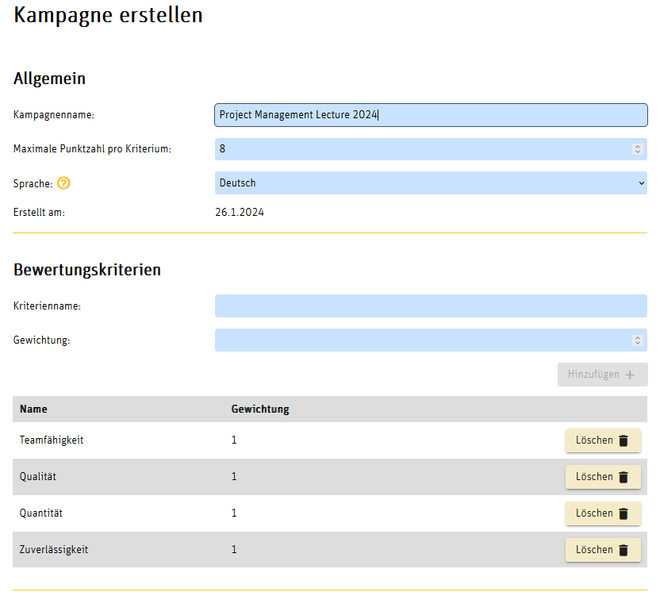
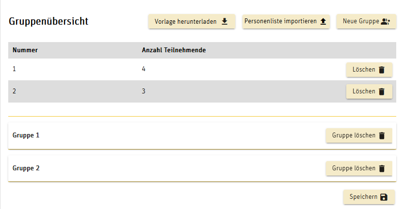
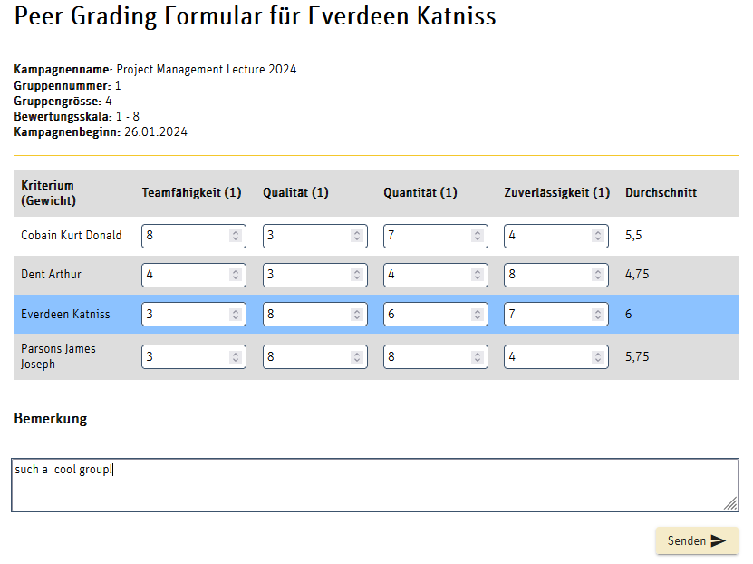
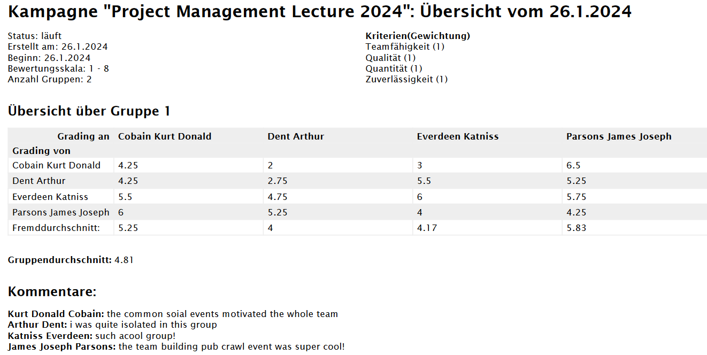
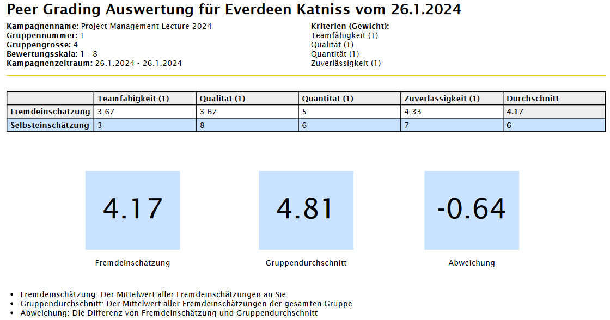
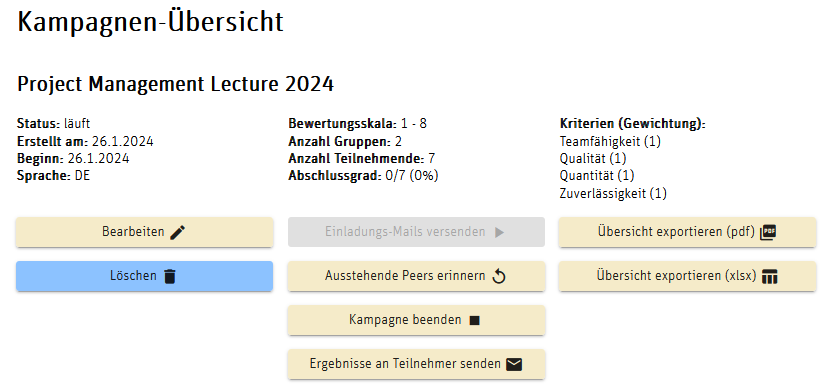

Peer Grading Tool PGT
Note for Lecturers:
If you are interested in using PGT, please contact author (see below)
» version information
1 General
In group work, ideally all members contribute equally to the overall success of the project, but usually in individually different ways.
Peer grading is used to evaluate individual contributions in group work ([Kaufman et.al. 1999], [Brutus & Donia 2010]),
in our context the online tool PGT is used for this purpose.
Each group member grades all other group members (peer grading) as well as himself/herself (self-grading)
according to definable criteria and receives an evaluation in the form of an anonymized comparison.
The evaluations are done with a point scale according to definable weighted criteria.
A lecturer (resp. teacher or instructor) can configure a peer grading with regard to the number
and designation of the criteria, their weighting and the point scale, as well as the start and end date
for the period of the . After the peer grading , the lecturer receives a mail notification
with all individual and group evaluations.
This allows the lecturer to compare his assessment of the group contribution of individual group members with the peer evaluations.
Both the instructor and the participants can use their respective evaluations to reflect on the teaching and learning
and benefit from them for further group work.
2 Other Peer Grading Tools
Comparable peer grading tools are either only commercially available with a licensing model
(e.g., CATME from Purdue University),
or have limitations such as requiring participants to have a Google account
(peer
grading tool as a plugin for Google Spreadsheets),
which does not go along with the idea of an open software system.
The Moodle activity "Workshop" is similar to the desired peer grading scenario. However,
analysis has shown that essential aspects that are realized in the PGT tool regarding functionality,
level of detail, flexibility and customization are not available. Thus, the PGT tool was implemented
in December 2022 as an in-house development at the Dep. of
Business of the Bern Univ. of Applied Sciences (BUAS) with Angular technology resulting
in a web based application, funded by the
BFH E-Learning Förderprogramm.
3 Functionality
a) Creation of a peer grading process by the lecturer incl. import of participants
in shape of a (UTF-8) csv file with participant name, (optional) matriculation number, email address,
and group number.


b) Each group member receives an email with a link to the
individualized peer grading sheet and fills it out completely (input values are validated).

c) Upon completion of the peer grading , all participants and the instructor
receive evaluations via email.


In this example, the peer grading is based on 4 criteria with points 1..8.
The documentation with the meaning of the criteria and the point scales is outside the
PGT system and is to be made known to the participants by other means
(see example for criteria catalog below). The evaluations of one's own contributions
by other group members are anonymized to the extent that only the mean value of all third-party
evaluations is given and thus exact conclusions about evaluating persons are not possible.
The group average is calculated by averaging all third-party assessments within a group.
For each group member, the deviation between the group average and the average of the third-party
assessments of the individual group member can be determined from this. In the evaluation section,
the difference between self-assessment and third-party assessment is also shown, which enables critical
reflection also with regard to future teamwork. The group average is calculated by averaging all third-party
assessments within a group.
d) The lecturer has control over the
peer grading process at any time:

4 Criteria catalog
It is by decision not presented by the PGT system, since it is usually available as a semi-structured
document and would have to be imported or entered in a time-consuming complex manner.
Here is an example from the course Business Case Studies"
(BCS) in the Department of Business at the Bern University of Applied Sciences.
It is presented in the study guide of the course. The standard score for a "good" assessment is set at 5/6 points.
Criterion "teamwork":
8/7: Exceptional contribution to the group process; "doer";
proactively advances project goals; is extremely committed;
"sacrifices" himself/herself for project success;
accomplishes much more than expected; opinion leader;
high communication skills.
6/5: Committed member, contribution not too high, not too low;
participates in the group process with an average sense of responsibility;
has an integrating effect in conflicts.
4/3: Provides contributions on demand; neutral attitude towards project success;
does not make motivational advances when there are "sags" in the team.
2/1: Unproductive to counterproductive attitude;
does not contribute to the success of the project or hinders/prevents its progress.
Destructive charisma.
Criterion "Quality of contributions":
8/7: Well above the expected quality.
6/5: Corresponds to the expected quality.
4/3: Less than the expected quality.
2/1: Insufficient quality.
Criterion "Quantity of contributions":
8/7: Well above the expected quantity.
6/5: Corresponds to the expected quantity.
4/3: Less than the expected quantity.
2/1: Insufficient quantity.
Criterion "Reliability":
8/7: Takes appointments seriously, actively seeks substitutes or alternatives
if unable to attend or misses appointments; offers substitutes for what
has been missed; ensures that the overall plan is adhered to,
provides corrective impetus if necessary.
6/5: Mostly reliable, but adapts to possibly fluctuating team attitude;
little pronounced striving for workload compensation
if (e.g. after absence) there is a low allocation of tasks;
hints at possible deficits in the project are given from time to time.
4/3: Multiple absences or failure to complete tasks; no or late sign-off;
only in rare cases are indications of possible deficits in the project
to be expected.
2/1: Unreliable, can hardly be entrusted with tasks critical to success;
(almost) no communication recognizable in case of failures.
Literature
-
Brutus, S., & Donia, M. (2010). Improving the effectiveness of students in groups with a centralized peer evaluation system. Academy of Management Learning and Education, 9(4), 652–662. https://journals.aom.org/doi/abs/10.5465/amle.9.4.zqr652
-
Kaufman, D. B., Felder, R. M., & Fuller, H. (1999). Peer ratings in cooperative learning teams. ASEE Annual Conference Proceedings, 3931–3942.
https://www.researchgate.net/publication/2450650_Peer_Ratings_in_Cooperative_Learning_Teams
Author: Eduard Klein / Feb 29, 2024